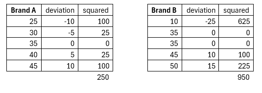
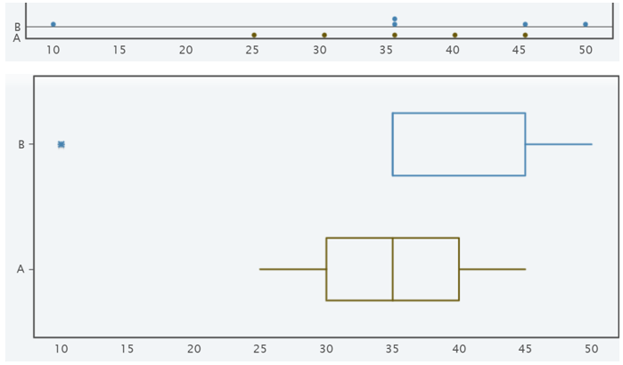

Section 4.2 Measures of Spread
Variability is an important idea in statistics. If we were to measure the height of everyone in our class, every observation could give a different value. That means not every student is the same height. Thus, there is variability in the heights of the students in class. If we asked the heights of students in several different classes, there will be variation among the different samples. Variability describes how the data are spread out. If the data are very close to each other, then there is low variability. If the data are very spread out, then there is high variability. We will investigate the range, variance, and standard deviation as measures of spread in the values.
Subsection 4.2.1 Understanding the Basics
The range of a set of data is the difference between the largest and the smallest data values (also known as the maximum and minimum values). This lets us know how spread apart the extreme values of the data are.
A better way is to describe the variability is with the standard deviation, which is the average distance each value is from the mean. We will illustrate this with an example and then review how to calculate it using technology.
Suppose you need to re-stain the fence in your backyard. There are two common brands at the local hardware store. Before purchasing the new stain, you ask your neighbors how long the stain lasts before having to re-stain the fence. For Brand A you find it needs reapplied after 25, 30, 35, 40, 45 months. For Brand B it needed to be reapplied after 10, 35, 35, 45, 50 months.
Based on this small sample, which brand would you choose and why?
As a new statistics student, you decided to compare the centers to see how long each brand typically lasts. We see there is no mode for Brand A, the mean is 175/5= 35 months, and the median is 35 months. For Brand B the mode is 35 months, the mean is 175/5= 35 months, and the median is 35 months. From these results one might assume both brands will last equally long. So, we need another way to analyze the data – thus the amount of spread and variation in how long each brand lasts.
Range of Brand A = 45-25 = 20 months
Range of Brand B = 50-10 = 40 months.
Brand A has a smaller spread in values while Brand B is more spread out in how long the stain lasts. Brand B may only last 10 months or as long as 50 months.
To find the deviation, we find the distance between each value and the mean. Take the value and subtract the mean of 35. Keep track of the negative values to indicate the values was below the mean and positive that it lasted longer than the mean. The sum of the deviations should be around zero.
Next, we will square each deviation value. Find the total deviation by adding them together and then divide by one less than the sample size. This will give the sample variance for each brand.

Variance for Brand A is 250/4 = 62.5 and the variance for Brand B is 950/4 =237.5
Square root the variance to get the standard deviation. This describes how far most values are from the mean. The smaller the standard deviation, the more consistent the brand of stain lasts.
Standard deviation for Brand A is sqrt625 = 7.9
Standard deviation for Brand A is sqrt 237.5 = 15.4
Therefore, Brand A is more consistent around the mean while Brand B has more variation in how long the stain will last.

The boxplot helps to see that Brand A is more consistent while Brand B is more spread out. The value of 10 is an outlier in the boxplot for Brand B.
In general a “small” standard deviation indicates the data is close together around the mean (more consistent) while a “large” standard deviation indicates the data is more spread out (less consistent). If a manufacturer is making bolts, they want the diameters to be very consistent so the nuts still fit, thus they want a small standard deviation.
Claiming the standard deviation is small or large also depends on the actual data values. To a bicyclist whose average speed is 20 mph, s = 10 mph is huge. To an airplane whose average speed is 500 mph, s = 10 mph is relatively small. The size of the variation depends on the size of the numbers in the data and the mean.
The good news is we can use technology to find the standard deviation. This is the only time we will do it by hand. Next is to find standard deviation on the calculator.
Subsection 4.2.2 Using TI-83 Calculator for Summary Statistics
Subsection 4.2.3 Using the Standard Deviation
One of the uses of the standard deviation is to describe how a population is distributed by using the Empirical Rule. This rule describes how much data is within a certain distance on either side of the mean.
Approximately 68% of the data fall with one standard deviation of the mean, giving the interval from μ − σ to μ + σ for the middle 68% of the values in a distribution.
Approximately 95% of the data fall with two standard deviations of the mean, giving the interval from μ − 2σ to μ + 2σ . This gives the middle 95% of the values in the distribution. This is often called the 95% Rule.
Approximately 99% of the data fall with three standard deviations of the mean, giving the interval from μ − 3σ to μ + 3σ .
Example: Find the interval for middle 68% of time that the stain will last for Brand A.
Solution: The 68% rules says the values are within 1 standard deviation of the mean, Since the mean is 35 months and the standard deviation is 7.9, the interval is 35-7.9 to 35+7.9 giving 27.1 to 42.9 months.
Example: Use the 95% ruler for the interval that Brand B will last.
Solution: The 95% rules says the values are within 2 standard deviation of the mean, Since the mean is 35 months and the standard deviation is 15.4, the interval is 35-2(15.4) to 35+2(15.4) giving 4.2 to 65.8 months. This interval is much wider because there was more variation in the original data.
Summary of formulas and notations